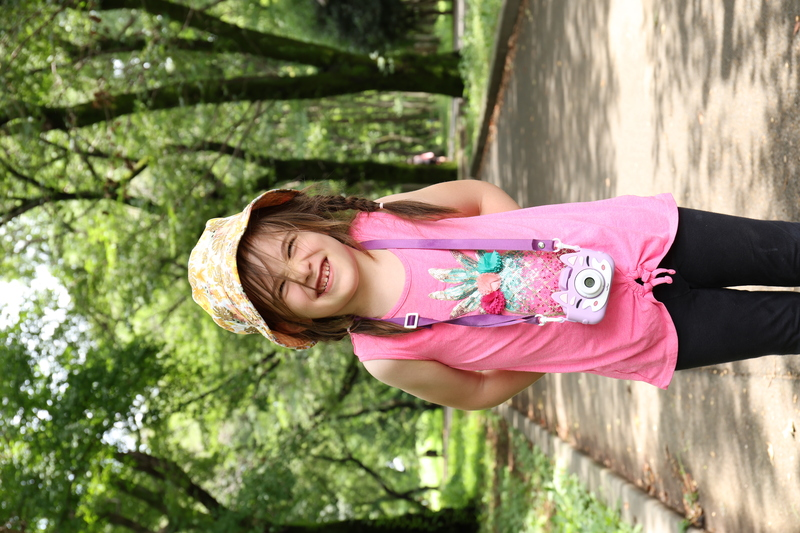

And with it, another not-so-quiet year for the (formerly Boulder) Lysnes. We've picked up stakes and moved to chase some new opportunities; after a warm wrap-up in Boulder, we spent part of summer in Minnesota with family staging our move to Japan. Ever a journey, it has nevertheless been a rewarding year for us all.
She's been sprouting up in more ways than one. Hot on the heels of her sister, she's been running and leaping with the best of them. Now at the stage where she babbles entire paragraphs to us,1 it's incredible how different she feels from Alma at this age. Like most toddlers she's happiest with board books, cardboard boxes (of which there have been plenty), and literally all the food ever right now right now.
We're not sure how different our new home feels to her, but it's probably a good sign she's still vibing along at her own pace.



Alma's new passion: blurry photos of passing trains.
She has taken all of the changes of the past year in stride. She continues to surprise the both of us not only with what she picks up on, but how constantly she finds the lovely parts of just about any topic. And that's beyond her growing as a loving big sister. She's been seizing the new around her in Nerima, learning more art, cooking, and even the first bits of reading. Childcare has been a journey-within-a-journey, but she's been happy and making friends at childcare now that she's going.
Oh! and Frozen has almost finally been dethroned after seeing Mary Poppins for the first time.2
She has taken all of the changes of the past year in stride. She continues to surprise the both of us not only with what she picks up on, but how constantly she finds the lovely parts of just about any topic. And that's beyond her growing as a loving big sister. She's been seizing the new around her in Nerima, learning more art, cooking, and even the first bits of reading. Childcare has been a journey-within-a-journey, but she's been happy and making friends at childcare now that she's going.
Oh! and Frozen has almost finally been dethroned after seeing Mary Poppins for the first time.2

Lots of changes, but we've really been enjoying our next step. Nathan moved on to Quantinuum to help their hardware efforts in Japan, and Inara beyond software development has been digging into Japan (and Japanese).
We managed to ramp up our efforts exploring Colorado before leaving it, and have found a lot of fertile ground in the parks and pathways3 of Tokyo so far.
More than the places though, we've been incredibly fortunate to have had so much time with and support from family and friends in 2024
-- even with all the chaos of the move.
The (Tokyo) Lysnes
2024
2. Impossible, but true!2b ↩
2b. But that was quickly replaced by The Lion King.2 ↩
3. And public toilets. ↩
Background adapted from Nicky Christensen's CSS snow example.
Last update on 20250103.